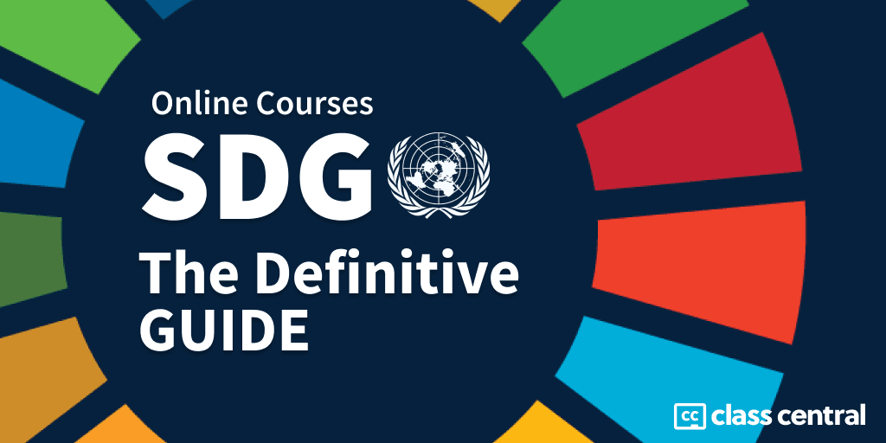

250+ Free Courses on Sustainable Development Goals
We’ve compiled over 250 sustainability online courses from universities like Harvard, Oxford, and Stanford.

In 2015, the United Nations came together to adopt the 2030 Agenda for Sustainable Development, a set of 17 Sustainable Development Goals (SDGs) on topics such as as health, inequality, and climate change. Since their adoption, SDGs have served as a platform for organizing global, national, local, and individual action.
With the help of SDG Academy, a free online education platform from the UN’s Sustainable Development Solutions Network (SDSN), Class Central has put together a list of online courses that will help you discover SDGs, how they’re being implemented, and how you can contribute too.

More specifically, we’ve created a Sustainable Development Goals online courses collection, where you’ll be able to easily navigate and filter the more than 250 SDG courses in the Class Central catalog, as you can see above.
Below, you’ll find a selection of courses about each SDG. For the full list, head to our dedicated collection.
SDG Academy alone has produced about 40 free online courses on cross-cutting issues related to SDGs, such as human rights, resilience, and environmental security. The list also includes sustainability courses offered by global universities like Harvard, Oxford, Stanford, and MIT on various online course platforms.

Whether you’re interested in poverty reduction, food security, education, or any other sustainable development topic, these courses will help you join efforts to achieve prosperity for both people and planet.
Click on a topic to jump to the corresponding courses:
- Intro to sustainability & SDGs
- SDG 1: No Poverty
- SDG 2: No Hunger
- SDG 3: Global Health
- SDG 4: Quality Education
- SDG 5: Gender Equality
- SDG 6: Clean Water
- SDG 7: Clean Energy
- SDG 8: Economic Growth
- SDG 9: Industry Innovation
- SDG 10: Global Inequality
- SDG 11: Smart Cities
- SDG 12: Responsible Production & Consumption
- SDG 13: Climate Change
- SDG 14: Ocean Ecosystem
- SDG 15: Terrestrial Ecosystem
- SDG 16: Humane Society
- SDG 17: Global Partnership
Introduction to Sustainability and SDGs
The Age of Sustainable DevelopmentColumbia University via Coursera
The Age of Sustainable Development” gives students an understanding of the key challenges and pathways to sustainable development – that is, economic development that is also socially inclusive and environmentally sustainable.
★★★★★ (14 ratings)
Introduction to Sustainability
University of Illinois at Urbana-Champaign via Coursera
This course introduces the academic approach of Sustainability and explores how today’s human societies can endure in the face of global change, ecosystem degradation and resource limitations.
★★★★★ (16 ratings)
Age of Sustainable Development
SDG Academy via edX
Learn the basics of sustainable development — what it is, why it’s important and how we can achieve it.
★★★★★ (8 ratings)
The Sustainable Development Goals – A global, transdisciplinary vision for the future
University of Copenhagen via Coursera
Within this course, you will get a historical overview of how sustainability has been understood, as well as a thorough introduction to the SDGs – what they are, how progress can be measured, and how the SDGs are relevant for the management of the global systems supporting humanity. The course will examine how various societal actors are responding to and implementing the SDGs.
★★★★★ (2 ratings)
Driving business towards the Sustainable Development Goals
Erasmus University Rotterdam via Coursera
This course has been developed by Rotterdam School of Management at Erasmus University (RSM). It focuses on the role of businesses in achieving the SDGs. You will gain insights from leaders of international companies and academics in business and management who will guide you through the issue of how businesses can contribute to the SDGs.
★★★★★ (2 ratings)
More courses: You can find over 500 sustainability courses here and over 250 SDG courses here.
SDG 1: Sustainability Courses for No Poverty

SDG 1: No Poverty
End poverty in all its forms everywhere.
From Poverty to Prosperity: Understanding Economic Development
University of Oxford via edX
Learn about the role of government and the key political, social, and economic processes that elevate any society from poverty to prosperity.
★★★★★ (7 ratings)
America’s Poverty and Inequality Course
Stanford University via edX
It’s a special moment in U.S. history in which income inequality has reached unprecedented levels, poverty remains extreme, and racial and gender inequalities are intransigent.
Why is there so much inequality and poverty? How might they be reduced? Find out from the country’s top scholars in “America’s course” on poverty and inequality.
★★★★★ (1 rating)
Understanding Poverty and Inequality
SDG Academy via edX
Explore the many facets and faces of poverty and inequality, and discover opportunities for individuals, countries, and a global community to help ensure that no one is left behind.
The Challenge of World Poverty
Massachusetts Institute of Technology via MIT OpenCourseWare
This is a course for those who are interested in the challenge posed by massive and persistent world poverty, and are hopeful that economists might have something useful to say about this challenge.
Poverty & Population: How Demographics Shape Policy
Columbia University via Coursera
The course is part of a sequence in social policy that has an HONORS TRACK. This course addresses issues of power, oppression, and white supremacy.
More courses: You can find over 80 courses on SDG 1: No Poverty here.
SDG 2: Sustainability Courses for No Hunger

SDG 2: No Hunger
End hunger, achieve food security and improved nutrition, and promote sustainable agriculture.
A Nutritional Approach to Agriculture and Food Security
University of Leeds via FutureLearn
This course presents current research, which aims to place nutrition at the heart of the food system.
★★★★★ (10 ratings)
Feeding a Hungry Planet: Agriculture, Nutrition and Sustainability
SDG Academy via edX
How do we create a healthy and sustainable diet for the growing world population?
★★★★★ (1 rating)
Sustainable Food Security: Food Access
Wageningen University via edX
Who decides what food is on your plate? Understand the basics of access to food and food decision-making from a multilevel perspective in this course. This online course is offered as a MOOC, and is part of the XSeries Sustainable Food Security.
★★★★★ (1 rating)
Remote Food Security Monitoring
Leiden University via Independent
This course aims to give a clear understanding of what remote food security monitoring entails, when it is a useful tool, and how to implement a remote food security monitoring project.
★★★★★ (1 rating)
Feeding the World
University of Pennsylvania via Coursera
This course will explore the concepts driving current food production science (population growth, urbanization, emerging affluence, resource constraints, and underlying biological limits) with the main focus on livestock production.
More courses: You can find over 80 courses on SDG 2: Zero Hunger here.
SDG 3:Sustainability Courses for Global Health

SDG 3: Good Health and Well-being
Ensure healthy lives and promote well-being for all at all ages.
The Challenges of Global Health
Duke University via Coursera
Taught by Dr. David Boyd, an award-winning professor at Duke University’s Global Health Institute the course combines lectures with videos shot around the world and interviews with some of the world’s foremost Global Health experts.
★★★★★ (11 ratings)
Global Public Health
SDG Academy via edX
Understanding the value of health not just as a benefit or right of individuals, but as a global public need.
★★★★★ (3 ratings)
An Introduction to Global Health
University of Copenhagen via Coursera
This course will provide you with an overview of the most important health challenges facing the world today. You will gain insight into how challenges have changed over time, we will discuss the likely determinants of such changes and examine future projections.
★★★★★ (3 ratings)
Essentials of Global Health
Yale University via Coursera
Essentials of Global Health is a comprehensive introduction to global health. The course will be global in coverage but with a focus on low- and middle-income countries, the health of the poor, and health disparities.
★★★★☆ (2 ratings)
Public Health Perspectives on Sustainable Diets
Johns Hopkins University via Coursera
This short course looks at the urgent need to address the sustainability of our food systems, including better understanding the complex relationship between diet and climate change.
★★★★★ (1 rating)
More courses: You can find over 80 courses on SDG 3: Global Health here.
SDG 4: Sustainability Courses for Quality Education

SDG 4: Quality Education
Ensure inclusive and equitable quality education and promote lifelong learning opportunities for all.
Education for All: Disability, Diversity and Inclusion
University of Cape Town via FutureLearn
On this course you will learn about inclusive education, understanding what barriers there are to learning and how to challenge them.
★★★★★ (100 ratings)
The Right to Education: Breaking Down the Barriers
University of Glasgow via FutureLearn
This online course will answer these and other questions, and help you join the movement to get children the world over into education.
★★★★★ (1 rating)
The Best Start in Life: Early Childhood Development for Sustainable Development
SDG Academy via edX
We’ll explore how neuroscience, sociology, anthropology and other studies have influenced our understanding of early childhood development.
Leading for Equity, Diversity and Inclusion in Higher Education
University of Michigan via Coursera
This course is open to professionals interested in learning more about leadership in higher education for a changing demographic or interested in developing their own leadership skills. The very idea that individuals can be taught to lead is not without its skeptics.
Diversity and Inclusion in Education
University of Glasgow via Coursera
Student diversity is becoming the rule rather than the exception in education systems across the world. Students bring to classroom different characteristics such as ability and disability, socio-economic background, race, ethnicity, and cultural background, beliefs and religion, and gender characteristics.
More courses: You can find over 90 courses on SDG 4: Quality Education here.
SDG 5: Sustainability Courses for Gender Equality

SDG 5: Gender Equality
Achieve gender equality and empower all women and girls.
Doing Gender and Why it Matters
The University of Hong Kong via edX
Understand gendered realities through an in-depth consideration of “sex” and “gender” as cultural, social and legal phenomena impacting society and how they interact with structures of power and violence using an interdisciplinary lens.
★★★★★ (11 ratings)
International Women’s Health and Human Rights
Stanford University via Coursera
This course focuses on women’s health and human rights issues from infancy through old age, including information about positive interventions relating to those issues. Learners are encouraged to interact with each other through interactive discussions.
★★★★★ (4 ratings)
Confronting Gender Based Violence: Global Lessons for Healthcare Workers
Johns Hopkins University via Coursera
This course introduces participants from the healthcare sector to gender based violence (GBV), including global epidemiology of GBV; health outcomes; seminal research; and clinical best practices for GBV prevention, support, and management.
★★★★★ (3 ratings)
Health Across the Gender Spectrum
Stanford University via edX
This course offers an intimate, story-based introduction to the experiences of six transgender children and their families. Through illustrated stories and short teaching videos, learners will gain a better understanding of gender identity and the gender spectrum.
★★★★★ (2 ratings)
Gender, Race and Technology
The University of Texas at Austin via Kadenze
What are the issues affecting women and minorities in the creative and technological fields?
What are some of the ways to solve them? Why is diversity important? These are some of the
questions we will address in this class.
★★★★★ (1 rating)
More courses: You can find over 60 courses on SDG 5: Gender Equality here.
SDG 6: Sustainability Courses for Clean Water

SDG 6: Clean Water and Sanitation
Ensure availability and sustainable management of water and sanitation for all.
Water Supply and Sanitation Policy in Developing Countries Part 1: Understanding Complex Problems
University of Manchester via Coursera
Our course explores what can be done to solve the complex problem that half a billion people worldwide do not have improved water supplies and two billion do not have improved sanitation.
★★★★★ (8 ratings)
International Water Law
University of Geneva via Coursera
In recent decades, international law has undergone a series of major developments in order to accommodate the many new facets of freshwater management and protection. This course aims to provide the necessary background to understand and examine the regulation applicable to transboundary freshwaters especially to rivers, lakes and aquifers.
★★★★★ (3 ratings)
Introduction to Household Water Treatment and Safe Storage
École Polytechnique Fédérale de Lausanne via Coursera
In this course you will learn about the most important water treatment methods at household level, successful implementation strategies and about assessing the impact of HWTS.
★★★★★ (1 rating)
Sustainability of Social-Ecological Systems: the Nexus between Water, Energy and Food
Universitat Autònoma de Barcelona (Autonomous University of Barcelona) via Coursera
In this course you will become familiar with the ideas of the water-energy-food nexus and transdisciplinary thinking. You will learn to see your community or country as a complex social-ecological system and to describe its water, energy and food metabolism in the form of a pattern, as well as to map the categories of social actors.
★★★★★ (1 rating)
Water: Addressing the Global Crisis
SDG Academy via edX
We are living in a water stressed world. It is a global crisis and therefore we must act now! What can we do to save the planet and ensure availability of water for all by 2030?
More courses: You can find over 80 courses on SDG 6: Clean Water here.
SDG 7: Sustainability Courses for Clean Energy

SDG 7: Affordable and Clean Energy
Assure access to affordable, reliable, sustainable, and modern energy for all.
Our Energy Future
University of California, San Diego via Coursera
This course is designed to introduce students to the issues of energy in the 21st century – including food and fuels – which are inseparably linked – and will discuss energy production and utilization from the biology, engineering, economics, climate science, and social science perspectives.
★★★★★ (7 ratings)
Introduction to solar cells
Technical University of Denmark (DTU) via Coursera
How do solar cells work, why do we need, and how can we measure their efficiency? These are just some of the questions Introduction to solar cells tackles. Whether you are looking for general insight in this green technology or your ambition is to pursue a career in solar, “Introduction to Solar Cells” is an excellent starting point.
★★★★★ (10 ratings)
Photovoltaic solar energy
École Polytechnique via Coursera
The course is an introduction to the photovoltaic (PV) applications in the general mix energetic context dominated by climate warming mitigation. The various uses of solar energy are firstly presented before a short description of the principle of the direct solar photon conversion into electricity (PV).
★★★★★ (3 ratings)
Politics and Economics of International Energy
Institut d’Etudes Politiques de Paris via Coursera
Energy issues have always been important in international relations, but in recent years may have become even more important than in the past due to the widespread awareness of existing limits to energy sources and negative climate impacts.
★★★★★ (3 ratings)
Global Energy and Climate Policy
SOAS University of London via Coursera
The Global Energy and Climate Policy course offers an introduction to the theoretical and practical understanding of how energy and climate change policies are designed, shaped, advocated and implemented.
★★★★★ (2 ratings)
More courses: You can find over 90 courses on SDG 7: Clean Energy here.
SDG 8: Sustainability Courses for Economic Growth

SDG 8: Decent Work and Economic Growth
Promote sustained, inclusive and sustainable economic growth, full and productive employment, and decent work for all.
Driving business towards the Sustainable Development Goals
Erasmus University Rotterdam via Coursera
This course has been developed by Rotterdam School of Management at Erasmus University (RSM). It focuses on the role of businesses in achieving the SDGs. You will gain insights from leaders of international companies and academics in business and management who will guide you through the issue of how businesses can contribute to the SDGs.
★★★★★ (2 ratings)
Economic Growth and Distributive Justice Part I – The Role of the State
Tel Aviv University via Coursera
If you really care about the big questions in the economies and societies of the 21st century, such as distributive justice – namely, inequality of income or wealth, and its correlation with economic growth – this course is meant for you. The knowledge you will gain can truly change your outlook on our world.
★★★★☆ (2 ratings)
Global Trends for Business and Society
University of Pennsylvania via Coursera
In this course, you’ll learn to analyze rapidly changing global trends, their effects on consumer and labor markets, financial systems, and geopolitical relationships among countries all over the world.
★★★★★ (1 rating)
Country Level Economics: Policies, Institutions, and Macroeconomic Performance
University of Illinois at Urbana-Champaign via Coursera
This course examines macroeconomic performance in the short and long run based on the economy’s institutional and policy environment.
★★★★★ (1 rating)
Macroeconomics for a Sustainable Planet
SDG Academy via edX
Is it possible to develop a thriving global economy in an equitable and environmentally-resilient way?
More courses: You can find over 130 courses on SDG 8: Economic Growth here.
SDG 9: Sustainability Courses for Industry Innovation

SDG 9: Industry, Innovation, and Infrastructure
Build resilient infrastructure, promote inclusive and sustainable industrialization, and foster innovation.
Becoming a changemaker: Introduction to Social Innovation
University of Cape Town via Coursera
This free 6 week course is for anyone who wants to make a difference. Whether you are already familiar with the field of social innovation or social entrepreneurship, working for an organization that wants to increase its social impact, or just starting out, this course will take you on a journey of exploring the complex problems that surround us and how to start thinking about solutions.
★★★★★ (36 ratings)
Greening the Economy: Lessons from Scandinavia
Lund University via Coursera
This course will explore greening the economy on four levels – individual, business, city, and nation. We will look at the relationships between these levels and give many practical examples of the complexities and solutions across the levels.
★★★★☆ (7 ratings)
Social Impact Strategy: Tools for Entrepreneurs and Innovators
University of Pennsylvania via Coursera
This course offers an introduction to social impact strategy and social entrepreneurship, including key concepts, an overview of the field, and tools to get started as a changemaker.
★★★★☆ (6 ratings)
Design Thinking for Innovation
University of Virginia via Coursera
Today innovation is everyone’s business. Whether you are a manager in a global corporation, an entrepreneur starting up, in a government role, or a teacher in an elementary school, everyone is expected to get lean – to do better with less.
★★★★★ (5 ratings)
Responsible Innovation: Ethics, Safety and Technology
Delft University of Technology via edX
How to deal with risks and ethical questions raised by development of new technologies.
★★★★☆ (1 rating)
More courses: You can find over 150 courses on SDG 9: Industry Innovation here.
SDG 10: Sustainability Courses for Global Inequality

SDG 10: Reduced Inequalities
Reduce inequality within and among countries.
Challenging Wealth and Income Inequality
The Open University via FutureLearn
From religious leaders to heads of state, everyone is talking about economic inequality. But what form does this take in different countries? What impact does it have on society? And why does it matter to you? This online course will explore these growing concerns about wealth and income inequality.
★★★★☆ (2 ratings)
Global Inequality
Wellesley College via edX
Explore how class, gender, and racial inequalities shape our personal and social worlds.
Inequality and Democracy
Utrecht University via Coursera
Most countries are getting more and more unequal. But the core of democracy is political equality: that everyone should have an equal say in how their country is run. Can we really expect these things to go together? Can people have equal political power while economic inequality grows and grows? Take this course and decide for yourself.
COVID-19 and Global Inequalities
University of California, Berkeley via edX
This course explores the global impact of the COVID-19 pandemic on members of disadvantaged communities, with lectures and course materials from dozens of countries, around the world.
Measuring Economic Inequality in Today’s World
University of London via FutureLearn
Learn to analyse data related to economic inequality, and present it in a way that can foster government policy change.
More courses: You can find over 110 courses on SDG 10: Global Inequality here.
SDG 11: Sustainability Courses for Smart Cities

SDG 11: Sustainable Cities and Communities
Make cities and human settlements inclusive, safe, resilient, and sustainable.
Greening the Economy: Sustainable Cities
Lund University via Coursera
This course explores sustainable cities as engines for greening the economy in Europe and around the world. We place cities in the context of sustainable urban transformation and climate change. We connect the key trends of urbanization, decarbonisation and sustainability.
★★★★★ (53 ratings)
Cities are back in town : urban sociology for a globalizing urban world
Institut d’Etudes Politiques de Paris via Coursera
Urbanization is reaching a new peak in the contemporary world with the rise of mega cities. Researchers try to make sense of these large urban areas using a variety of concepts. The class will review debates and present social science models of cities to analyse and compare contemporary developments.
★★★★★ (2 ratings)
Smart Cities – Management of Smart Urban Infrastructures
École Polytechnique Fédérale de Lausanne via Coursera
Learn about Smart Cities within the context of management of urban infrastructures. The introduction of Smart urban technologies into legacy infrastructures has resulted in numerous challenges and opportunities for contemporary cities and will continue to do so.
★★★★☆ (2 ratings)
Co-Creating Sustainable Cities
Delft University of Technology via edX
Sustainability is a result of the interplay between technology, policy and people’s daily lives. Understanding this interplay is essential for creating sustainable cities. Learn how citizen’s co-creation is key in making cities worldwide more sustainable in this open and online course.
★★★★★ (1 rating)
Sustainable Cities
SDG Academy via edX
Learn how government, the private sector, and other actors can support sustainable urban development
★★★★★ (1 rating)
More courses: You can find over 60 courses on SDG 11: Smart Cities here.
SDG 12: Sustainability Courses for Responsible Production and Consumption

SDG 12: Responsible Consumption and Production
Ensure sustainable consumption and production patterns.
Natural Resources for Sustainable Development
SDG Academy via edX
Explore the sustainable development opportunities and challenges in using oil, gas and minerals.
Sustainable Consumption and Production in Africa
United Nations via Independent
In this course, we will go on a journey to Africa and and discuss what are the challenges and outlooks for sustainable development on the continent. The course introduces you to the key approaches, policies and international frameworks that aim to unlock more sustainable patterns of consumption and production (SCP).
Socially-Responsible Real Estate Development
Massachusetts Institute of Technology via edX
Explore socially responsible real estate development, including the role of impact assessment and public consultation.
More courses: You can find over 70 courses on SDG 12: Responsible Production & Consumption here.
SDG 13: Sustainability Courses for Climate Change

SDG 13: Climate Action
Take urgent action to combat climate change and its impacts
Climate Change Mitigation in Developing Countries
University of Cape Town via Coursera
This course challenges you to consider how one might lift societies out of poverty while also mitigating greenhouse gas emissions. We explore the inherent complexity of developing country governments wanting to grow their economies in a climate friendly way.
★★★★☆ (29 ratings)
The Health Effects of Climate Change
Harvard University via edX
Learn how global warming impacts human health, and the ways we can diminish those impacts.
★★★★★ (6 ratings)
Global Warming I: The Science and Modeling of Climate Change
The University of Chicago via Coursera
This class describes the science of global warming and the forecast for humans’ impact on Earth’s climate. Intended for an audience without much scientific background but a healthy sense of curiosity, the class brings together insights and perspectives from physics, chemistry, biology, earth and atmospheric sciences, and even some economics—all based on a foundation of simple mathematics (algebra).
★★★★☆ (9 ratings)
Climate Change Science and Negotiations
SDG Academy via edX
Humanity is up against a tight timeline to address climate change. Learn how we can deeply decarbonize the global energy systems, and put the world on a 2°C pathway.
★★★★☆ (8 ratings)
Global Warming Science
Massachusetts Institute of Technology via edX
Learn about the physics, chemistry, biology, and geology of the earth’s climate system.
★★★★★ (1 rating)
More courses: You can find over 140 courses on SDG 13: Climate Change here.
SDG 14: Sustainability Courses for Ocean Ecosystem

SDG 14: Life Below Water
Conserve and sustainably use oceans, seas, and marine resources for sustainable development.
Tropical coastal ecosystems
University of Queensland via edX
Take the challenge and understand problems and solutions to managing tropical coastal ecosystems.
★★★★★ (7 ratings)
Urban Water – Innovations for Environmental Sustainability
The University of British Columbia via edX
Learn about innovative urban solutions to the global water crisis, with inspiring real-life examples from architects, engineers, planners, ecologists, and artists.
★★★★☆ (2 ratings)
One Planet, One Ocean
SDG Academy via edX
A holistic view of how the ocean functions, how human interactions with the ocean can be understood, and what solutions are available to support both sustainable use and stewardship of our blue planet.
★★★★★ (2 ratings)
Oceanography: a key to better understand our world
University of Barcelona via Coursera
The course for a round the world regatta leads the boats through the Mediterranean Sea and the Atlantic, Southern Indian and South Pacific Oceans. On their voyage, the skippers come across a large variety of oceanographic situations: strong currents, floating ice, wave formations of every kind and biological diversity.
Our Global Ocean – An Introduction Course
Smithsonian Institution via edX
Our ocean is vast, mysterious, and key to all life on our planet. This short course will introduce you to the basics of our ocean, marine life, and the connection between humans and our ocean.
More courses: You can find over 70 courses on SDG 14: Ocean Ecosystem here.
SDG 15: Sustainability Courses for Terrestrial Ecosystem

SDG 15: Life on Land
Protect, restore, and promote sustainable use of terrestrial ecosystems, sustainably manage forests, combat desertification, and reverse land degradation and biodiversity loss.
Environmental Gamechanger – Lead the Way to Sustainable Development
Wageningen University via edX
Do you wish you could have an actual, tangible impact on global challenges, like climate change and pollution? Do you know of concrete issues in your community that need to change for the better, but no-one is taking on the challenge? Then let this online course empower you to ‘be the change you want to see in the world’. Join game changers from all over and start creating that sustainable environment now, right where you are.
★★★★★ (7 ratings)
Planetary Boundaries
SDG Academy via edX
Can our planet continue to support the current scope of human activity?
★★★★★ (5 ratings)
Global Environmental Management
Technical University of Denmark (DTU) via Coursera
Learn about the best environmental technologies for a sustainable development and how they are managed in various settings around the world. This course gives you an opportunity to learn about global trends that influence our environment and the living conditions and how different management systems and approaches that are used around the world to manage the environment.
★★★★★ (5 ratings)
The Science Advisory Toolbox for Environmental Management
University System of Maryland via edX
Develop your own science and management strategy while viewing the environment through a multicultural lens. Learn how science advocacy can drive effective environmental and sustainability decision-making.
★★★★★ (5 ratings)
Discover Best Practice Farming for a Sustainable 2050
University of Western Australia via Coursera
The Discover Best Practice Farming for a Sustainable 2050 Course is based on a clear vision: imagine best practice farming for 2050, start to implement these strategies now, all the while making sure it will still be profitable.
★★★★☆ (2 ratings)
More courses: You can find over 110 courses on SDG 15: Terrestrial Ecosystem here.
SDG 16: Sustainability Courses for Humane Society

SDG 16: Peace, Justice, and Strong Institutions
Promote peaceful and inclusive societies for sustainable development, provide access to justice for all and build effective, accountable, and inclusive institutions at all levels
Environmental Security and Sustaining Peace
SDG Academy via edX
Natural resources and the environment as a vehicle for peace.
Data Ethics, AI and Responsible Innovation
University of Edinburgh via edX
Our future is here and it relies on data. Medical robots, smart homes and cities, predictive policing, artificial intelligences – all are fuelled by data and all promise new benefits to society. But will these innovations benefit everyone? Who stands to gain and who is put at risk? How can we ensure that data is part of a just and sustainable world? Join us on this course as we explore these increasingly important topics further.
Laudato Si: On Care for Our Common Home
SDG Academy via edX
A mini-course on the urgent call to action: protect the earth and its inhabitants from ruin.
More courses: You can find over 130 courses on SDG 16: Humane Society here.
SDG 17: Sustainability Courses for Global Partnership

SDG 17: Partnership for the Goals
Strengthen the means of implementation and revitalize the global partnership for sustainable development.
Strategic Communication for Sustainability Leaders
University System of Maryland via edX
Communicating science effectively is a critical skill for anyone involved in environmental policy or sustainability. Learn how to integrate effective visualizations into compelling narratives to clearly explain complex ecosystem processes.
★★★★★ (41 ratings)
The Changing Global Order
Leiden University via Coursera
How are international power relations changing and how can global peace and stability be maintained? This course familiarizes you with some main theories of international relations, shows how the global order is gradually changing and discusses how selected international and regional organizations contribute to the maintenance of global peace and security.
★★★★☆ (10 ratings)
Global Sociology
Wellesley College via edX
Connect your personal biography to global history as you develop your sociological imagination.
★★★★☆ (1 rating)
BGP-003: Conflicts and Peace: Global Perspective
IGNOU via Swayam
The Programme is focused on the understanding of peace and conflict resolution, to deal with conflict in the society particularly in Gandhian perspective.The giant strides man has made in science and technology have failed to engender peace of mind in the individuals, harmony in society, and peace among nations; nor have they helped in liquidating poverty, ignorance, and exploitation.
More courses: You can find over 120 courses on SDG 17: Global Partnership here.

Rui Ma


Kalule Robert-
This is a great approach towards education. This is what I call strategic learning, and this is the way to change our world.
Valeria
Hi! We have just launched the MOOC “Higher Education for Sustainable Development Goals” available on Polimi Open Knowledge and released in cc by.
https://www.pok.polimi.it/courses/course-v1:Polimi+HE4SDGs+2019_M10/about
David Ekefre
This is a wonderful comprehensive list. i personally have done about 5 of the courses above.